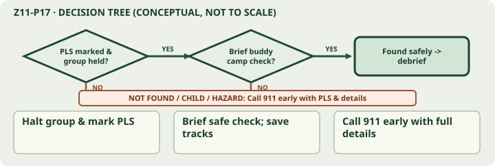

Z11-P17 · Navigation, weather and rescue · Adapted historical material
Respond systematically when a child or partner disappears
Prevent secondary lost-person emergencies while launching immediate containment, clue preservation and early 911/SAR activation.
When it applies · Any outing where a child, vulnerable adult or hiking partner cannot be found at a camp, junction or stop.
Equipment · Watch/time log, whistle, phone/communicator and remaining group roster.

Actions
- Stop the remaining group together immediately, record the exact time and Point Last Seen (PLS) without trampling surrounding tracks, and blow timed whistle calls while listening quietly for replies.[E11, N09, T06]
- Conduct ONLY a brief, bounded high-probability check of immediate camp hazards (nearby tents, vehicles, shoreline edges, rest areas) using paired spotters who keep voice contact—never scatter solo into woods.[E11, N09, ED]
- Call 911 or park dispatch EARLY—especially for young children, older adults, medical needs or cold/dark weather—giving exact PLS, clothing colors, footwear tread, age, medical history and direction last headed.[T02, T06, N09, T10]
Failure recognition · Delaying a 911 call for hours out of embarrassment while six untrained friends trample all footprints around the Point Last Seen and get lost themselves.[N09, T02, E11]
Verify · Confirm the Point Last Seen is marked cleanly, remaining group stays accounted for and exact missing-person details have been relayed to dispatch.[N09, T06, E11, ED]
Stop or change course · Never send solo searchers into dark, flooded, icy or unfamiliar terrain; follow arriving SAR incident-command instructions strictly.[N09, E11, T02]
Evidence and editorial notes
- E11 · NPS · Hike Smart (current web edition)
- Section: Plan your hike; Stay together · Conditions: Groups on hiking routes
Support: Choose a route suited to the group's abilities and hike at a pace that keeps the group together.
Limitations: Fast hikers moving ahead at junctions is a leading driver of preventable separation. · Conflicting evidence: None; aligns with SAR prevention principles.
Editorial note: Core reference for group accountability and pacing cards. · Specialist reviewer: Group leaders and search and rescue
Primary source · checked 2026-11-24 - N09 · NPS · Outdoor Emergency Plan (current web edition)
- Section: Outdoor Emergency Plan > Signaling, Lost-Person Protocol and SAR Handoff · Conditions: Lost or overdue party awaiting search and rescue
Support: Stay put once lost unless immediate danger requires moving to nearby safer ground; preserve footprints/clues, make visible contrast signals in open clearings, answer whistle/voice calls and stay ready for responder instructions.
Limitations: Unplanned wandering expands search radius exponentially and delays rescue contact. · Conflicting evidence: None; reinforces B014-P16, P17 and P20.
Editorial note: Core evidence for lost-person psychology, signaling and SAR coordination cards. · Specialist reviewer: Search and rescue
Primary source · checked 2026-11-24 - T02 · American Red Cross · First Aid Steps (current web edition)
- Section: First Aid Steps > Call 9-1-1 · Conditions: Lay emergency response to unresponsiveness, abnormal breathing or severe bleeding
Support: Activate EMS and get needed equipment. Follow dispatcher directions and act within training.
Limitations: Remote locations may delay EMS arrival, requiring sustained stabilization after activation. · Conflicting evidence: None; aligns with NPS-E.
Editorial note: Mandates early emergency activation and dispatcher adherence. · Specialist reviewer: EMS and wilderness medicine
Primary source · checked 2026-11-24 - T06 · NPS · Outdoor Emergency Plan (current web edition)
- Section: If you get lost or hurt; call for help · Conditions: Outdoor US emergency
Support: Communicate location, last known point, situation and needs. Stay put when unable to establish a safe route unless immediate danger requires movement.
Limitations: Cell signal is unreliable in backcountry terrain; pre-trip plans bridge communication gaps. · Conflicting evidence: None; core lost-person decision rule.
Editorial note: Foundation for stay/signal/move and dispatch handoff cards. · Specialist reviewer: Search and rescue
Primary source · checked 2026-11-24 - T10 · FEMA / Ready.gov · People with Disabilities (current web edition)
- Section: People with Disabilities > Make a Plan and Build a Kit · Conditions: Individuals with mobility, sensory, medical, or power-dependent access and functional needs
Support: Build a personal support network, plan accessible evacuation transport, register voluntarily with local emergency registries where available, and plan backup power and spare supplies for medical devices, medications, and service animals.
Limitations: Local registry availability and utility priority-restoration policies vary by jurisdiction. · Conflicting evidence: None; extends generic preparedness plans to accessible requirements.
Editorial note: Directly addresses Z01 accessible emergency planning requirement. · Specialist reviewer: Accessible emergency management and disability preparedness
Primary source · checked 2026-11-24
Source lineage · B014-P17 missing companion and NPS emergency plan; adapted historical material · Classification · Adapted historical material.